Miguel Guerrero
miguel.guerrero5445@gmail.com
Education
Computer Science, B.S. Minor in Math
Colorado State University
August 2018 - Present
Associates of Science
Front Range Community College
August 2015 - May 2018
Professional Experience
Undergraduate Researcher Volunteer
Colorado State University - NUI Lab
January 2019 - Present
Developing an application for Microsoft HoloLens using Unity to work in conjunction with a robot to communicate in a virtual environment. The connection between the robot and the HoloLens is established with the use of a WebSocket. The robot operates with Python and ROS to get the relative location to relay back to the Hololens.

MURALS Presenter
Colorado State University
March 2019
Presented my research to individuals and group during Multicultural Undergraduate Research Art and Leadership Symposium. Educated and communicated with individual in non-STEM fields to support clarity in the field.
Projects
Cipher Game
HackCU
February 2019
Worked with a team during CU Boulder HackCU to make a kid’s game about ciphers. This game was intended to make kids interested in the concept of cybersecurity. I was tasked with combining all scenes using Python in conjunction with PyQt library.
Image Classification
Udacity
January 2019
Build and trained a model that identifies species of flowers from images as my challenge project for my Udacity scholarship. I utilize Python in conjunction with PyTorch libary to accomplish this.
Website
Solo
Novenber 2018
Programmed this website from scratch using HTML and CSS to display my personal projects.
Virtual Soundboard
RamReality Create-a-thon
October 2018
Worked with a team during Colorado State University Create-a-thon to make a virtual soundboard with an interactive sound
visualizer. I was tasked with producing the background using Unity and C#. Our team won the Land Grant Vision Award.
Role Playing Game
Hack-a-thon
March 2018
Worked with a team during Front Range Community College Hack-a-thon to make a role-playing game. We alternated between
people to program the game in Java. Our team won 1st place between intermediate students.

Certifications
Design Thinking
Colorado State University
In progress
- - Empathy for people you designing for
- - Experimentation and prototyping
- - Bias toward doing and making over thinking and meeting
- - Communicate your vision in an impactful and meaningful way
- - Power of iteration
MTA: Introduction to Programming Using Java
Microsoft
May 2018 - Present
- - Understand Java fundamentals
- - Implement flow control
- - Work with data types, variables, and expressions
- - Perform object-oriented programming
- - Compile and debug code
MTA: Introduction to Programming Using Python
Microsoft
April 2018 - Present
- - Document and Structure Code
- - Perform Input and Output Operations
- - Control Flow with Decisions and Loops
- - Perform Troubleshooting and Error Handling
- - Perform Operations Using Modules and Tools
- - Perform Operations using Data Types and Operators
MTA: Introduction to Programming Using JavaScript
Microsoft
May 2018 - Present
- - Interact with HTML Forms
- - Interact with the Document Object Model
- - Implement and Analyze Decisions and Loops
- - Program with Variables, Data Types, and Functions
- - Program with JavaScript Operators, Methods, and Keywords
MTA: Introduction to Programming Using HTML and CSS
Microsoft
May 2018 - Present
- - Understand HTML Fundamentals
- - Understand CSS Fundamentals
- - Structure Documents Using HTML
- - Present Multimedia Using HTML
- - Style Web Pages Using CSS
Complete C# Unity Developer 3D
Udemy
In progress
- - Understand C# Fundamentals
- - Experience using Unity
- - Have good coding and design patterns
- - Excellent general knowledge of video game design
- - Know how to use source control
Complete Blender Creator
Udemy
In progress
- - Use Blender and understand it's interface
- - Understand the principles of modelling
- - Create 3D models with simple colors
- - Learn the basics of animation
- - Combine CGI with real life footage